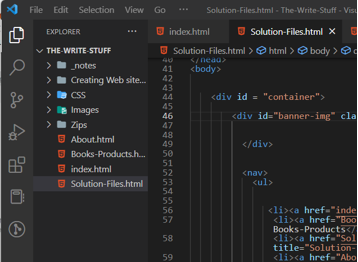
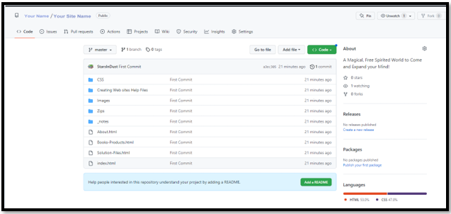

~15 Setting up the Web site on Git Hub~
10/14/2024
If you want to Create Your Site on GitHub
Change site from Private to Public
Updating a Website with Visual Studio Code
If you want to create your site on GITHub
You will want to select create new Repository
Now we need to fill out a few form values here
- You can give the name of the site anything you want
- The local path is very important
Pay attention to where the local path is because that is where it will automatically create a folder and then we need to move our folder and files for our site into that folder.
Everything else should be ok left at the defaults, so you can just click the big blue “Create Repository” button to create it.
To upload an entire site
Important if you want to move your entire site, you cannot and must not do this from the GitHub website. It must be moved from the GitHub desktop app to the GitHub website from the top button, and it will create the site for you on the GitHub website.
The Github Desktop app
Remember, to Upload an entire site initially:
You must be in Github desktop app.
Do not try to start an entire site upload from the github website, or from Visual Studio. It cannot be done.
You can only push an entire site with all of its folders through the Github desktop app.
You can get the app for your computer desktop from this site:
You will want to add an existing repository. All this means is that you have already created your website, like we did in this tutorial series, and now you want to push it onto the Github Servers.
So, a repository is just a name for a website that GitHub uses, to refer to your website that you want to add to the GitHub Servers.
Click on this Add button to add the website that we created
Browse to where you site is located inside of Xampp


You may have to sign in to github again. Yes, this might take forever to reach you.
File- options – sign in continue with browser
Now you want to Publish the Repository that you selected by hitting this button here
Go to Your Visual Studio Code app on your computer.
Make sure that your website folder is open in Visual Studio Code.
File-Open Folder

Now from the panel on the left, you want to click on this icon
Now you want to initialize Repository

You want to write something in this message box. I wrote First Commit
Click on this drop-down button here and choose to Push and Commit
Do notice that everything turned into a lime green mode
Anyways, push the Commit & Push option
You will get this message, and you want to click the YES button for this.
Add Your Remote
And you will get this message saying that you do not have a Remote. Click on that Blue button Add Remote
This is where you want to paste that URL that you copied from the Website. If you did not copy the url from GitHub yet, you can find it by following the steps below:
How to use the GitHub URL
- On the GitHub website, click on the website that you just published
- Locate the green button named Code and click on it. The GitHub URL will appear.
- Copy the GitHub URL.
- Open Visual Studio Desktop app on your local machine.
You paste the url that you just copied from the GitHub website, and put it in here inside of the Visual Studio App.
Next it will ask for the Remote Name, just give it the name of your site
Remember to hit ENTER so that it will Commit
Now in the Source Control icon, you want to click on Publish Branch. This will push your site to Git Hub
Click on the Green Authorize button
Now fill in the password or even the user- name if need be
UserName: Your User Name
Password: Your Password
Now just go to your Site URL to see your files inside of github
https://github.com/Your Name/Your Site Name

Now you want to Click on the settings icon at the top of the page
Now go to the left side of the page and click on Pages
Change site from Private to Public
Top left corner hamburger menu, chose your site

Go to Settings
Scroll to bottom of page to danger zone
You want danger zone- Change visibility – public
Enable Github pages
Top left corner hamburger menu, choose your site
Go to Settings
Left side panel inside of Settings, you will find Pages
You want to select main from the drop down here
Now the setting should look like this SAVE the settings
Now at the top of the page you should have a link to view your live site

Notice that in 2024, you are able to easily create a new Repository or website, just by going to the left panel in the home page.
Set Repository Once and Done
You will find that once the repository is set to one specific folder, it will still stay on that repository and you will be able to upload your site to it, forever. Or until you change the location of the folder on your machine. If you ever change the location of that folder on your machine then you will have to reset up the repository again and have it point to that site.
You can check to see if your folder is still pointing to the correct web site, by going to Visual Studio code, and opening the dropdown for repositories.
In Visual Studio, open the folder to the website that you want to check. File> Open Folder
Now from the panel on the left, you want to click on this icon
From there open up the drop down that says Repositories. I have not been working in this site for about a year, but when I reopen the folder in Visual Studio, I can still see that it is pointing to the correct repository and I will be able to upload new files to this site, without needing to do any extra finagling.
Now if you have a folder that is not pointing to any repository, it will let you know as soon as you open this icon on the left. This is a site that I am not quite ready to be public, I do not want it uploaded to a GitHub site at this time, and so, it is not connected to a website. Nor does it need to be.
As you can see from the blue button below, it wants me to Intialize Repository. This is how I know that this site is not on the Servers at GitHub
Updating a Website with Visual Studio Code
Make sure that you are inside of your website folder inside of Visual Studio.
Browse to where you are keeping your website on your computer

First of all, you need to actually make a change to your website. It can be extremely small, like just making an exclamation mark. But without a change being made, your commit button will be greyed out, and you will not be able to use it.
Go to the Source control icon on the left-hand side of the site.
Fill in the message box, so you know that a change is made and you might want to name it.
Choose Commit and Push from the Drop-Down.
This next box does not always show up, but if it does just select YES
Test Your website, you may have to refresh, and you may have to wait a few minutes for changes to take effect. Just keep on refreshing until the changes take effect.
I put an exclamation point after books and it showed up. So, my changes are working
And making changes is as simple as that!